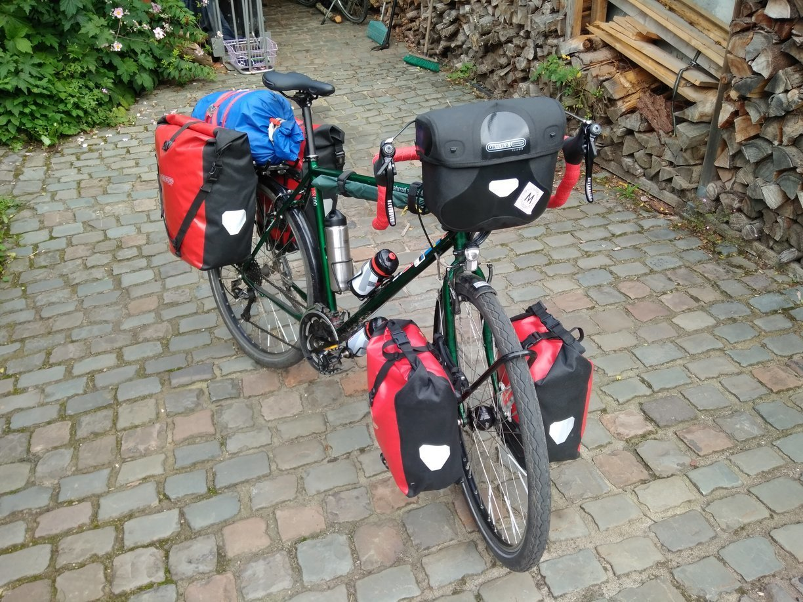
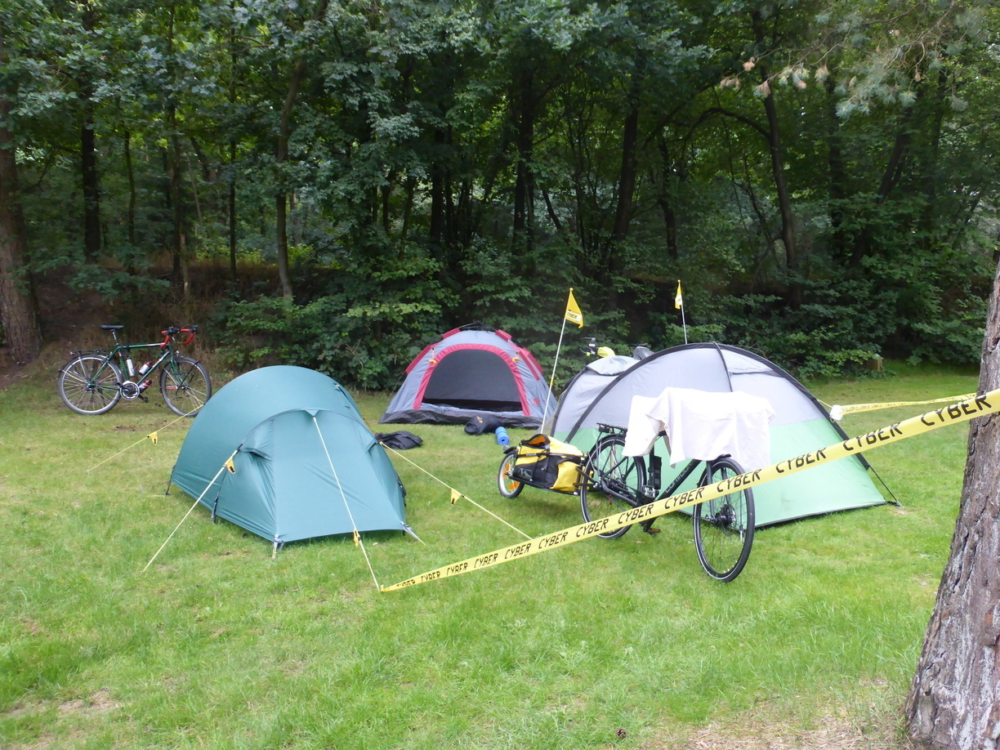
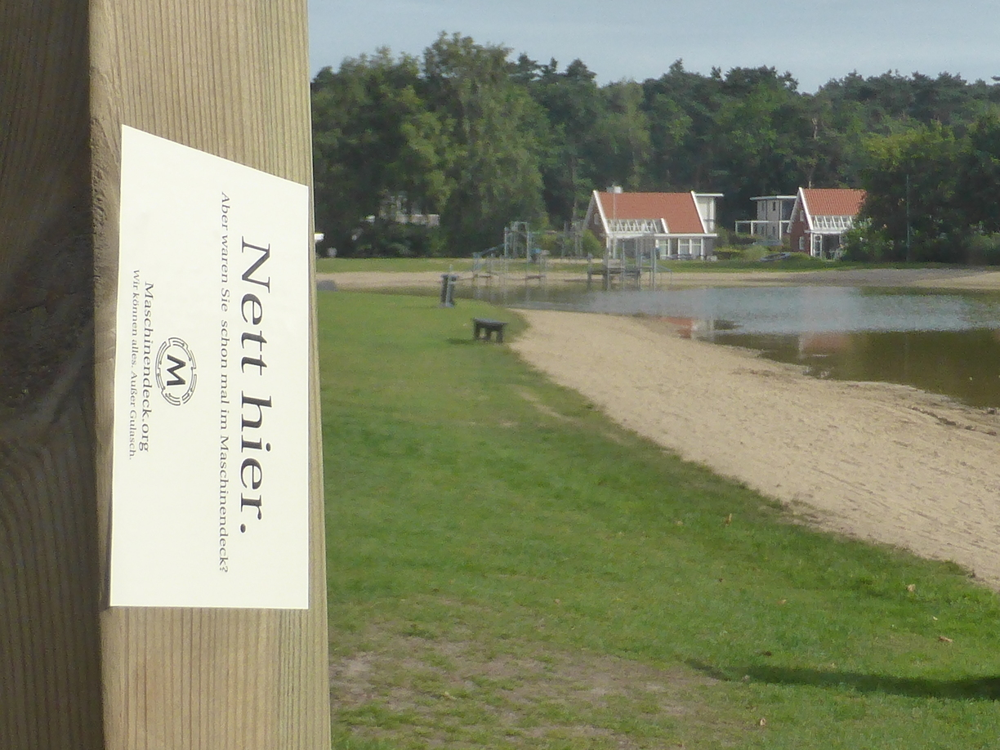
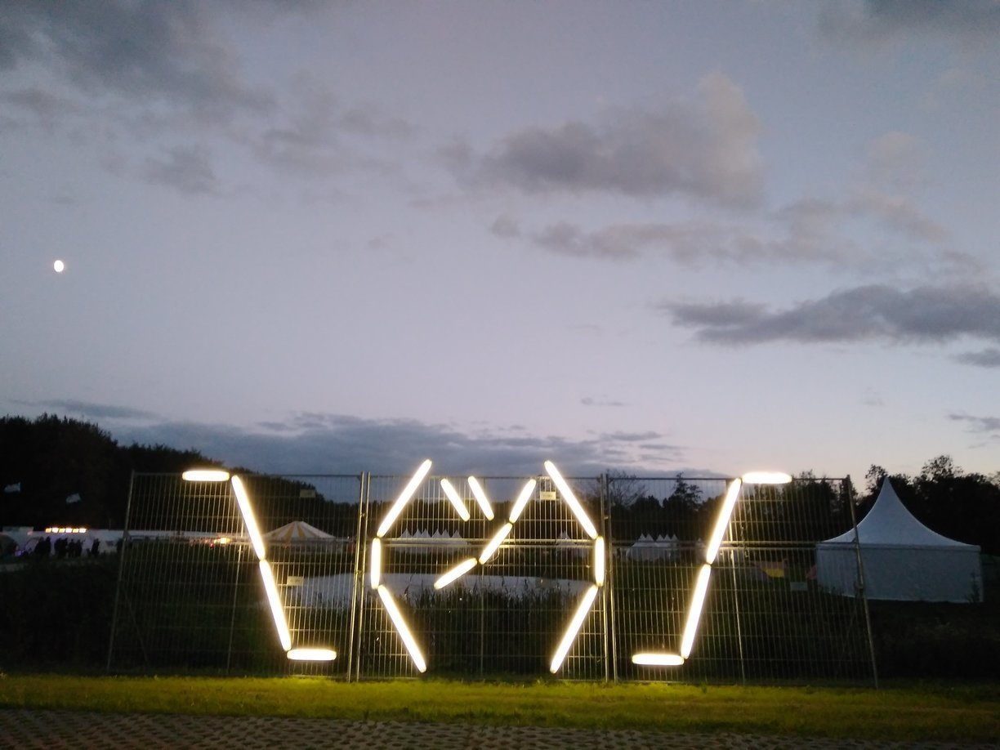
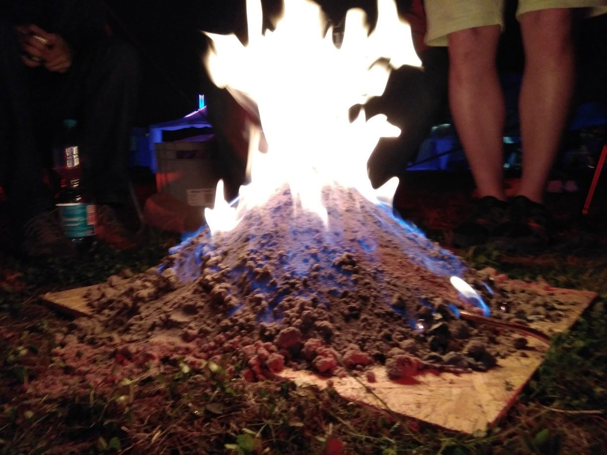
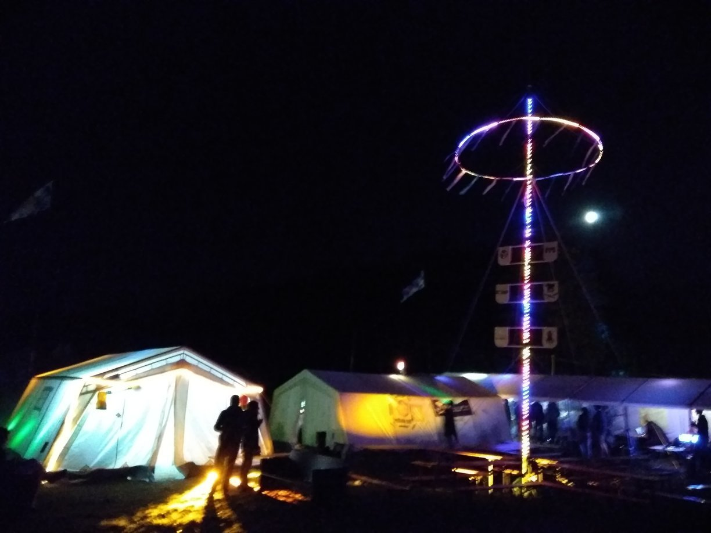
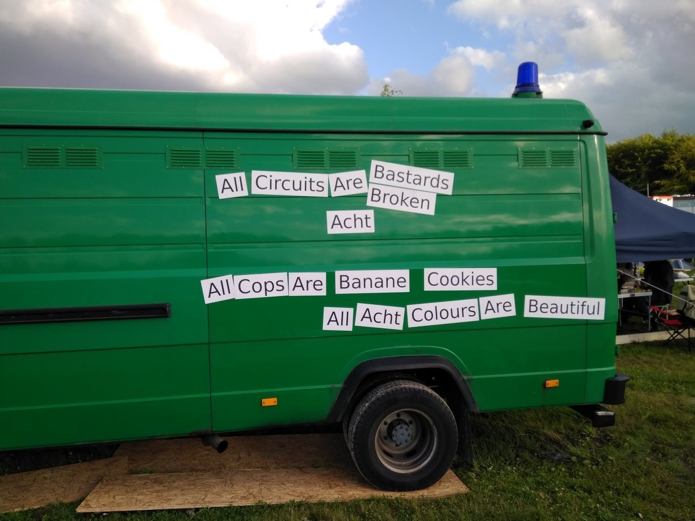

Hackers on a Bike Posted on August 13, 2017
Inzwischen bin ich schon seit fast zwei Wochen wieder auf Achse. Es ist alos höchste Zeit für ein Update. Diesmal wird mich die Reise nach Großbritannien führen. Aber dazu später mehr. Zunächst einmal ging es nämlich nach Zeewolde in den Niederlanden, wo das Hackercamp SHA2017 stattfand.
Tag 1
Solingen - Wissel 114 km
 Nachdem ich am Morgen noch die letzten Sachen eingepackt hatte fuhr ich auch zügig los. Ich hatte mich nämlich in Düsseldorf mit Markus und Mic verabredet, um gemeinsam zur SHA zu radeln. Am Anfang führte uns unser Weg immer entlang des Rheins. Später wurde dann der Rheinradweg verlassen um ein paar Kilometer zu sparen. Gegen Abend kamen wir zwischen Xanten und Emmerich an einen Campingplatz. Die Rezeption hatte zwar schon geschlossen, aber wir wurden dennoch reingelassen.
Tag 2
Wissel - Otterlo 68 km
Warum immer gleich anzünden?
Am zweiten Tag wollten wir eigentlich schon das Camp erreichen. In Arnhem hatten wir jedoch schon einige Zeit beim Mittagessen verbracht (An dieser Stelle sei das Rawsome in Arnhem sehr zu empfehlen). Später wurde dann klar, dass wir es wenn nur sehr spät zum Camp nach Zeewolde schaffen würden. Als wir dann in Otterlo auf eine Vielzahl von Campingplätzen getroffen sind, war die Entscheidung schnell getroffen. Wir haben dann einfach unser eigenes Hackercamp gemacht. 
Tag 3
Otterlo - Zeewolde 42 km
 Nach einem Frühstück am See und einem Spaziergang über den Campingplatz ging es schließlich weiter. Am frühen Nachmittag traffen wir dann schließlich auf dem Camp ein.
Ich versuche garnicht erst das Camp in all seiner Vielfalt zu beschreiben. Deswegen gibt es an dieser Stelle lediglich ein paar Bilder vom Camp.     Nur soviel: Beim nächsten Camp gibt es garantiert wieder Hackers on a Bike :)